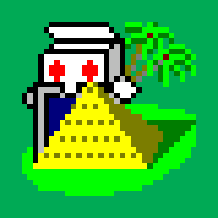

Solitaire
/ Free Pyramid Solitaire

This post is a little late. I should have written it before the post
for Canfield, since it turns out that Pyramid
Solitaire was programmed first.
But I chose to take my time and wait to finish
Pyramid Turn Three variant.
Then I was looking for the help file of the game
Tut's
Tomb released with Microsoft Entertainment Pack 2.
And so, without further ado, I can simply pick up much of the original
documentation provided by Microsoft at the time.
Playing the Game
The object of Pyramid Solitaire is to remove all the cards in the
pyramid by pairing cards where ranks add up to 13. Kings may be
removed individually.
Note: The rank of a card is it's numerical value. An Ace has a
rank o 1, a 2 card has a rank of 2... Jacks have a rank of 11, Queens
of 12, and Kings of 13.
To Deal a new Hand:
- Click the “GAME” menu. Or press F2.
To Match 2 Cards:
-
Move the cursor over the cards. When it is over a free card, it will
look like a hand. Otherwise, it will look like an arrow. Click the
desired card, and it will be highlighted. Then click on a second
free card. If the two cards equal 13, they will move to the top
right corner. Otherwise, the highlighted card will be restored and
you must choose a new pair of cards.
Note: A free card is one which has no other cards lying on top
of it.
To Turn Over Cards in the Deck:
-
Click the down-turned deck. A card or cards will be turned face up.
You can match these cards just like cards in the pyramid.
Note: One or three cards will be turned face up depending on
what variant you play (Pyramid Turn One or Pyramid Turn Three).
To Turn Over the Deck:
-
After all cards have been turned face-up, they can be flipped over
and re-used. Click the green “plus” sign to turn over the deck.
Rules of the Game
-
Pyramid Solitaire begins with a shuffled deck and 28 cards dealt in a
pyramid shape on the screen. The rest of the cards are placed
face-down in the top left corner.
-
You may play any free card, or any card that will be made free by
removing the card you have just selected.
-
Cards are removed by matching two cards whose ranks add up to 13.
Kings are removed individually.
-
Cards from the remaining deck may be used to make a match of 13. Only
the card on top of the turned-over stack may be played.
-
You win when all the cards in the pyramid have been removed.
Strategy and Hints
This section contains helpful hints for playing Pyramid Solitaire
successfully.
-
If more than one match option is available for a card, consider your
choices carefully. If you can remove a card that will free up
another much needed card, this is probably your best move.
-
Match the cards in the pyramid before resorting to the deck cards.
You may need those cards later when matching from the pyramid is
more difficult.
Let's Play!
From now on, even if like me you no longer have access to an old
personal computer with Windows 3.1, you can still play
Pyramid Solitaire or
Pyramid Turn Three online.
As usual with Solitaire-Play, these are responsive solitaire games.
You can play them for free with phone, tablet or desktop...
Michel (2019/02/08)